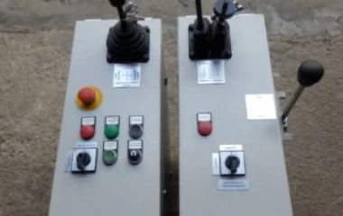
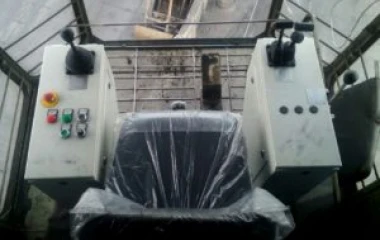

<div class="content-block">
  <div class="wrapper">
    <div class="content-block__item">
      <figure class="content-block__figure">
        
      </figure>

      <div class="content-block__info">
        <p class="content-block__text content-block__text--bold">ООО «ЕИМ инжениринг» изготавливает кресло-пульты
          управления на заказ
          по чертежам и эскизам Заказчика.</p>
        <p class="content-block__text">ООО «ЕИМ инжениринг» предоставляет своим Заказчикам полный спектр услуг по
          поставке кресло-пультов управления, включающих проектирование, изготовление, поставку, демонтаж старого
          кресло-пульта, монтаж, пусконаладку, гарантийное и послегарантийное обслуживание поставленного
          оборудования.</p>
      </div>
    </div>
    <div class="content-block__item">
      <div class="content-block__inner">
        <div class="content-block__info content-block__info--lg">
          <div class="content-block__text">
            <p>При изготовлении кресло-пультов управления применяются высококачественные комплектующие ведущих
              отечественных и зарубежных производителей:</p>
            <ul>
              <li>Командоконтроллеры и переключатели Gessmann;</li>
              <li>Аппаратура сигнализации и управления Eaton;</li>
              <li>Клеммные соединения и маркировка Klemsan.</li>
            </ul>
            <p>Возможно применение оборудования других производителей по желанию Заказчика. Технические данные
              кресло-пультов управления КПУ:</p>
            <ul>
              <li>Температура эксплуатации –40…+60°С;</li>
              <li>Температура хранения –50…+80°С;</li>
              <li>Степень защиты IP54;</li>
              <li>Толщина металла колонок кресло-пульта 1,5 мм;</li>
              <li>Порошковая окраска RAL7032.</li>
            </ul>
          </div>
        </div>
        <figure class="content-block__figure content-block__figure--sm">
          
          <figcaption class="content-block__caption">Кресло-пульт КПУ-Б в кабине портального крана «Кондор», левая
            рукоятка командоконтроллера управления механизмами подъема и замыкания с кнопками управления поворотной
            крюковой подвеской.</figcaption>
        </figure>
      </div>
      <section class="advantages">
        <h3 class="advantages__title title">Преимущества</h3>
        <ul class="advantages__list">
          <li class="advantages__item">
            <svg class="advantages__icon" width="57" height="57">
              <use xlink:href="img/sprite.svg#icon-support"></use>
            </svg>
            <div class="advantages__text">Качественный сервис</div>
          </li>
          <li class="advantages__item">
            <svg class="advantages__icon" width="57" height="57">
              <use xlink:href="img/sprite.svg#icon-auto-repair-service"></use>
            </svg>
            <div class="advantages__text">Сборка из лучших комплектующих</div>
          </li>
          <li class="advantages__item">
            <svg class="advantages__icon" width="57" height="57">
              <use xlink:href="img/sprite.svg#icon-save-money"></use>
            </svg>
            <div class="advantages__text">Лучшая цена на современном рынке</div>
          </li>
        </ul>
      </section>
      <div class="content-block__inner">
        <figure class="content-block__figure content-block__figure--sm">
          
          <figcaption class="content-block__caption">Командоконтроллер механизма подъема Gessmann в правой колонке
            кресло-пульта КПУ-А</figcaption>
        </figure>
        <div class="content-block__info content-block__info--lg">
          <p class="content-block__text">Стандартный кресло-пульт управления КПУ-А с шириной колонок 210 мм широко
            применяется при замене штатных кресло-пультов на портальных кранах «Альбатрос» и «Сокол» производства
            Kranbau
            Eberswalde (TAKRAF), а также на мостовых и козловых кранах. Популярность кресло-пульта управления КПУ-А
            обусловлена оптимальными габаритными размерами, удобством эксплуатации и технического обслуживания. В
            комплекте с креслом крановщика KFS 4 кресло-пульт управления КПУ-А легко устанавливается в большинство типов
            кабин, а за счет механизма складывания кресла обеспечивается проход крановщика на рабочее место между
            колонками кресло-пульта, что особенно актуально для узких кабин мостовых и портальных кранов.Для применения
            на
            контейнерных кранах ООО «ЕИМ инжениринг» разработан стандартный кресло-пульт управления КПУ-Б с шириной
            колонок 290 мм. Кресло-пульт КПУ-Б широко применяется при замене штатных кресло-пультов на портальных кранах
            «Кондор» производства Kranbau Eberswalde (TAKRAF).</p>
        </div>

      </div>
      <div class="content-block__inner">
        <div class="content-block__info content-block__info--lg">
          <p class="content-block__text">ООО «ЕИМ инжениринг» изготовлено и поставлено клиентам более 80 кресло-пультов
            управления. Основываясь на большом опыте проектирования и изготовления кресло-пультов специалистами ООО «ЕИМ
            инжениринг» отработана оптимальная конструкция колонок кресло-пультов и схема размещения оборудования
            управления и сигнализации. При проектировании кресло-пульта за основу берется штатная электрическая схема
            крана, сохраняются схемы соединений и маркировка электрических проводов, таким образом в большинстве случаев
            замена штатного кресло-пульта на кресло-пульт производства ООО «ЕИМ инжениринг» без труда выполняется
            специалистами Заказчика. Комплектность поставки кресло-пультов управления КПУ: Левая и правая колонки;
            Плита-основание; Кресло крановщика.</p>
        </div>
        <figure class="content-block__figure content-block__figure--sm">
          
          <figcaption class="content-block__caption">Командоконтроллер механизма передвижения Gessmann в правой колонке
            кресло-пульта КПУ-А</figcaption>
        </figure>
        <div class="content-block__text content-block__text--full">Кресло-пульты производства ООО «ЕИМ инжениринг»
          изготовлены в соответствии с техническими условиями ТУ 3458-001-13824760-2016. Нашими клиентами являются
          морские
          и речные порты, металлургические комбинаты, машиностроительные и краностроительные заводы.</div>
      </div>
    </div>
    <div class="content-block__item">
      <ul class="list-pic-2">
        <li class="list-pic-2__item">
          <div class="list-pic-2__inner">
            
            <div class="list-pic-2__text">Кресло-пульт управления КПУ-А предназначен для установки на портальных кранах
              «Альбатрос» ...</div>
          </div>
        </li>
        <li class="list-pic-2__item">
          <div class="list-pic-2__inner">
            
            <div class="list-pic-2__text">Кресло-пульт управления КПУ-Б предназначен для установки на портальных кранах
              «Кондор» ...</div>
          </div>
        </li>
        <li class="list-pic-2__item">
          <div class="list-pic-2__inner">
            
            <div class="list-pic-2__text">Кресло-пульт управления КПУ-В предназначен для установки на кранах всех типов,
              включая мостовые и козловые краны...</div>
          </div>
        </li>
      </ul>
    </div>
  </div>

</div>